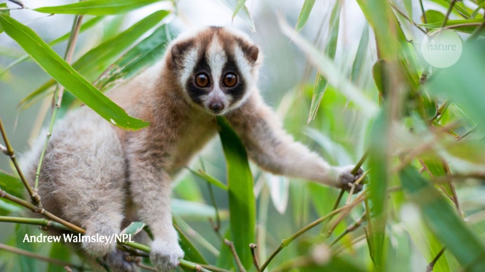
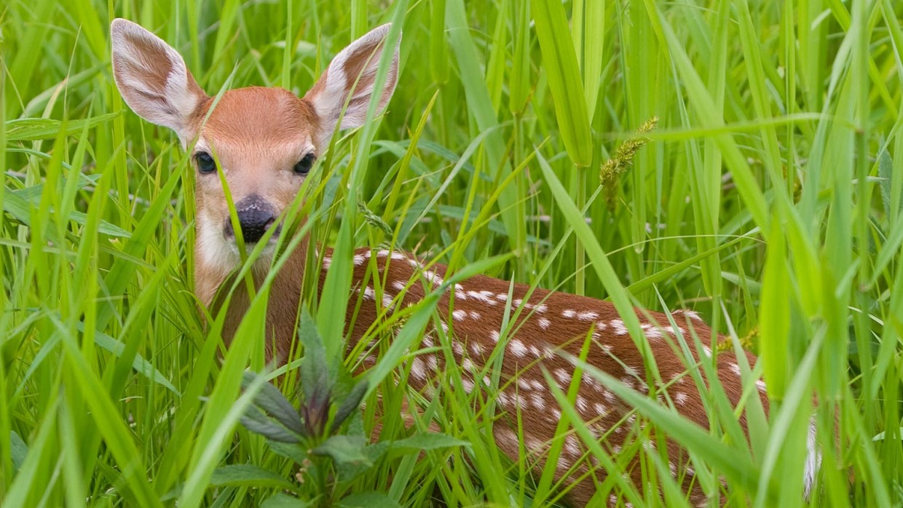
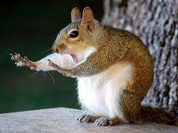

- A slow loris is a small to medium sized primate.
- Lorises have a vast range of habitats in southern and south-eastern Asia.
-
- The name 'loris' is Dutch and means 'clown', which probably comes from the facial features that help to define the species
- The slow loris are among the rarest primates on earth.
- They diverged from their closest cousins the African bushbabies around 40 million years ago.
- In total, there are nine species of slow lorises:
-
- the Bengal, Bornean, greater, Hiller's, Javan, Kayan, Philippine, pygmy and Sody's

Visit Google to see more!
Please check your browser Extension
Explore the ocean
Take me to GoMyCode's Website
Let's go up Top
Thanks for visiting and goodbye